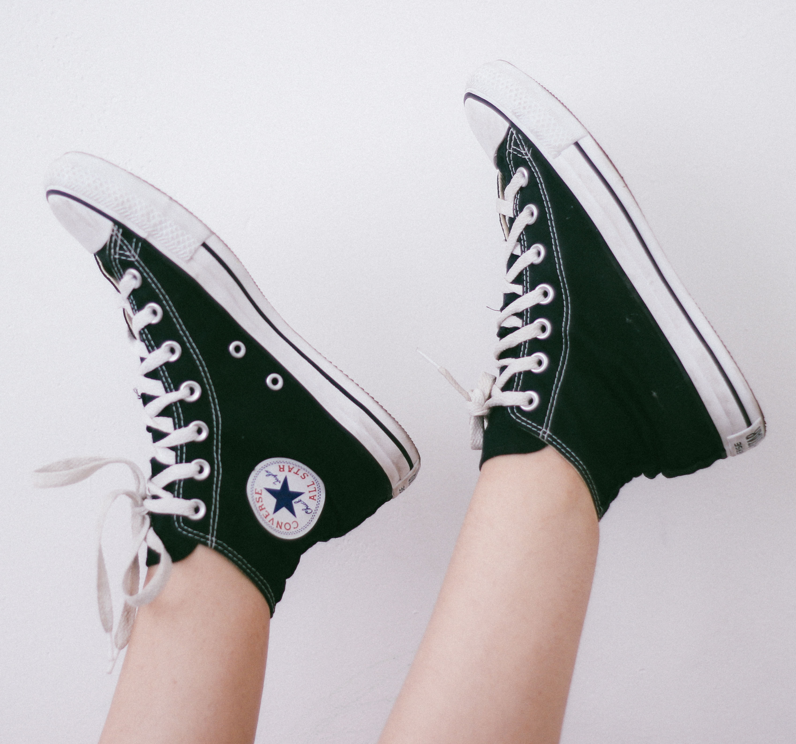
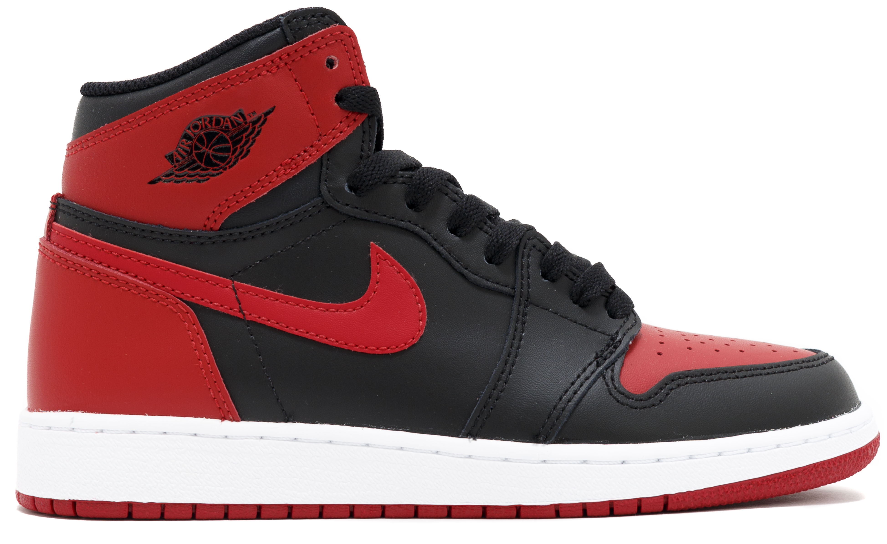

Stranica o povijesti i novostima u svijetu tenisica.
Converse Chuck Taylor All Star, kod nas popularno zvane "Starke" su prve tenisice napravljene za košarku. Napravio ih je Marquis Converse 1917. godine, te su i dan danas popularne. Tenisice se sastoje od gumenih potplata, te platnenog gornjišta. Košarkaš Charles Taylor nakon što je počeo igrati za tim kojega je sponzorirao Converse počeo je i prodavati njihove tenisice pod nazivom "All Star". Chuck je tijekom godina predlagao i promjene na tenisicama, a njegova najpoznatija ideja je okrugla zakrpa na gležnju. Starke su koristili američki vojnici u drugom svjetskom ratu za vrijeme treninga, a iznimno popularne su bile u košarci gdje su se koristile sve do 1980. godine. Zanimljiva činjenica je da su u 60tim godinama prošlog stoljeća preko 90% igrača NBA-a koristili All Star tenisice. I dan danas su iznimno popularne, međutim ne među sportašima već kao casual obuća.


Nike Air Jordan 1 tenisice su izdane 1984. godine. Napravljene za košarkašku legendu Michaela Jordana, ove tenisice su doživjele nevjerojatnu popularnost među mlađom populacijom. Prvi model je bio u crveno-crnoj boji koju je NBA zabranila zbog "manjka bijele boje", te je Nike plaćao kaznu 5000$ po svakoj utakmici na kojoj je Michael Jordan nosio ove tenisice. Do danas su napravili 31 verziju Air Jordan tenisica, a poslijednja verzija (XXXI) je napravljena za američkog košarkaša Russella Westbrook-a. Međutim, Air Jordan 1 su još uvijek najpopularniji model. Ove tenisice zamalo nisu ni postojale, zato što je Michael Jordan trebao potpisati ugovor s Adidasom, međutim u zadnji tren se predomislio. Razna ograničena izdanja ovih tenisica danas košta i po nekoliko desetaka tisuća dolara(kao npr. Air Jordan 4 Retro "Carhartt x Eminem").